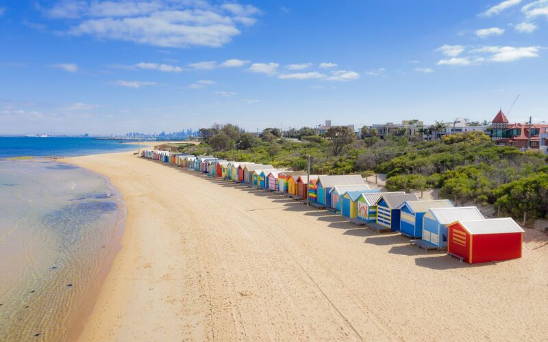
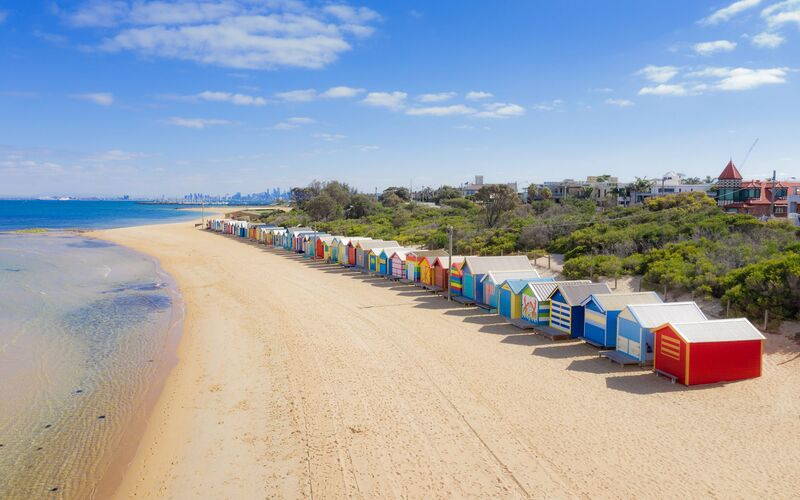

Informações
| Demografia | População | 5,315,600 hab | |
|---|---|---|---|
| Densidade Populacional | 500 hab/km² | ||
| Geografia | Área | 2,453 km² | |
| Região | Melbourne | ||
| País | Austrália | ||
| Website | www.visitmelbourne.com | ||
5 Curiosidades de Melbourne
- Capital do esporte
- Rede de bondes do mundo
- Café de nível mundial
- Multiculturalismo
- Primeiro semáforo elétrico do hemisfério sul